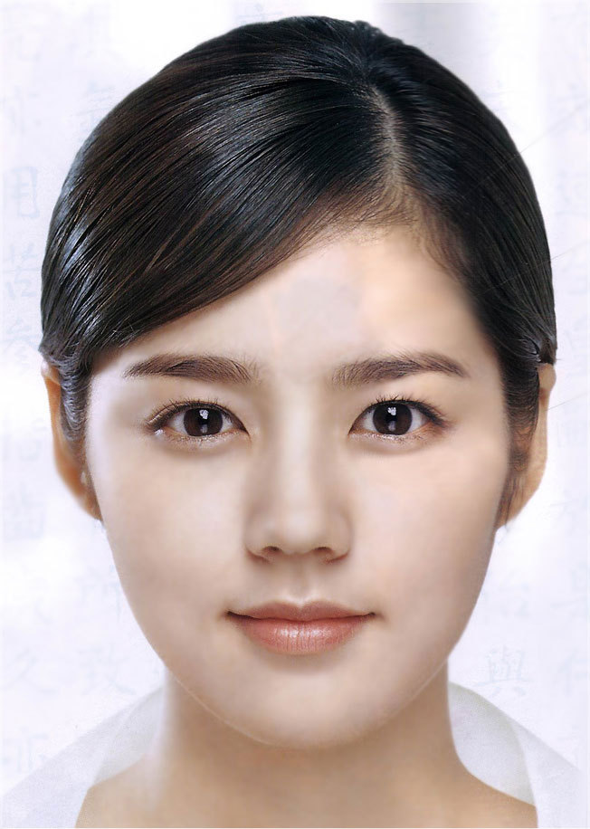

<div id="map">
</div>

<div id="finder-box">
  <div class="dropdown">
    <button class="btn btn-info btn-xs dropdown-toggle" type="button" id="dropdownMenu1" data-toggle="dropdown" aria-haspopup="true" aria-expanded="true">모두
      <span class="caret"></span>
    </button>
    <ul class="dropdown-menu" aria-labelledby="dropdownMenu1">
      <li><a href="a.html">남자</a></li>
      <li><a href="a.html">여자</a></li>
    </ul>
    <button type="button" class="btn btn-info btn-xs btn-on-map">취미</button>
    <button type="button" class="btn btn-info btn-xs btn-on-map">고향 </button>
    <button type="button" class="btn btn-info btn-xs btn-on-map">나이 </button>
  </div>
</div>

<div id="friend-box">
  <div class="panel panel-info">
    <div class="panel-heading match-heading">
      BestMatch
    </div>
    <div class="panel-body">
      <span id="img-in-box">
      </span>
       설현<br>
       50m 이내
      <button type="button" class="btn btn-info btn-xs addfriend-btn">
        친구 추가
      </button>
    </div>
  </div>


  <div class="panel panel-info">
    <div class="panel-body">
      <span id="img-in-box">
      </span>
         한가인<br>
         200m 이내
        <button type="button" class="btn btn-info btn-xs addfriend-btn">
          친구 추가
        </button>
    </div>
  </div>
  
  <div class="panel panel-info">
    <div class="panel-body">
      <span id="img-in-box">
      </span>
       키아누리브쑤<br>
       500m 이내
      <button type="button" class="btn btn-info btn-xs addfriend-btn">
        친구 추가
      </button>
    </div>
  </div>
</div>
  


<script>
  var friendMarkers = new Array;
  var friendLocArr = [
    ['friend0', 37.497129, 127.027612, 4],
    ['friend1', 37.496708, 127.026865, 5],
    ['friend2', 37.498308, 127.026312, 3],
    ['friend3', 37.497380, 127.027294, 2],
    ['friend4', 37.498674, 127.028249, 1]
  ];
  var notFriendMarkers = new Array;
  var notFriendLocArr = [
    ['notFriend0', 37.496629, 127.027622, 4],
    ['notFriend1', 37.495508, 127.026845, 5],
    ['notFriend2', 37.497248, 127.026352, 3],
    ['notFriend3', 37.499380, 127.027244, 2],
    ['notFriend4', 37.497624, 127.028219, 1]
  ];

  var map;
  var infowindow;
  var contentString = '<div id="content">' +
    '<table>' +
    '<tr><td></td><td rowspan="2">외출중..[남김말]</td></tr>' +
    '<tr><td>설현</td></tr>' +
    '</table>' +
    '</div>';

  function initMap() {
    map = new google.maps.Map(document.getElementById('map'), {
      zoom: 17,
      center: {
        lat: 37.498129,
        lng: 127.027612
      },
      disableDefaultUI: true, 
      panControl: false,
      zoomControl: false,
      scaleControl: false
    });
    infowindow = new google.maps.InfoWindow({
      content: contentString
    });
    //  clearMarkers();
    for (var i = 0; i < friendLocArr.length; i++) {
      markFriends(i);
    }
    for (var i = 0; i < friendLocArr.length; i++) {
      markNotFriends(i);
    }
  }

  function markFriends(i) {
    var friendLoc = friendLocArr[i];
    window.setTimeout(function() {
      friendMarkers.push(new google.maps.Marker({
        title: friendLoc[0],
        position: {
          lat: friendLoc[1],
          lng: friendLoc[2]
        },
        map: map,
        animation: google.maps.Animation.DROP,
        icon: 'images/home.png'
      }));
      friendMarkers[i].addListener('click', function() {
        infowindow.open(map, friendMarkers[i], friendLocArr[0]);
        marker.setMap(map);
      });
    }, i * 100);
  }

  function markNotFriends(i) {
    var notFriendLoc = notFriendLocArr[i];
    window.setTimeout(function() {
      notFriendMarkers.push(new google.maps.Marker({
        title: notFriendLoc[0],
        position: {
          lat: notFriendLoc[1],
          lng: notFriendLoc[2]
        },
        map: map,
        animation: google.maps.Animation.DROP,
        icon: 'images/pin.png'
      }));
      notFriendMarkers[i].addListener('click', function() {
        infowindow.open(map, notFriendMarkers[i]);
      });
    }, i * 100);
  }

</script>

<script async defer src="https://maps.googleapis.com/maps/api/js?signed_in=false&callback=initMap"></script>
<script type="text/javascript" src="https://ajax.googleapis.com/ajax/libs/jquery/2.0.0/jquery.min.js"></script>
